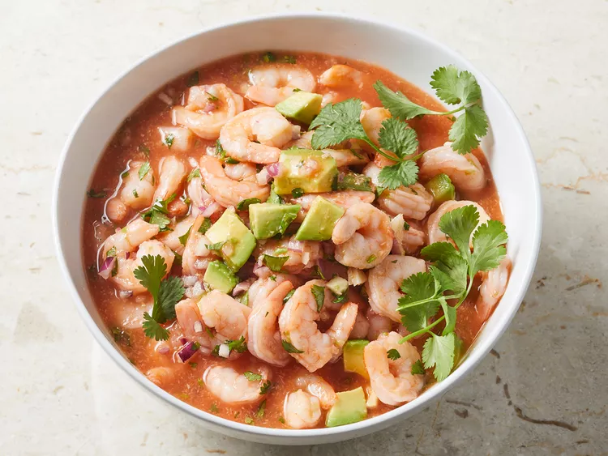

Prawn Cocktail

Description
This shrimp cocktail recipe is similar to one I first tried in San Antonio.
I could never find a recipe that recaptured what I had there.
I experimented and finally came up with the perfect combination of ingredients.
Anyone who has tried it has begged for the recipe. Try it with tortilla chips!
Ingredients
- 2 pounds cooked shrimp, peeled and deveined
- ½ cup finely chopped red onion
- ¼ cup fresh cilantro, chopped
- 1 tablespoon crushed garlic
- 1 ½ cups tomato and clam juice cocktail
- ¼ cup ketchup
- ¼ cup fresh lime juice
- ¼ cup prepared horseradish
- 1 teaspoon hot pepper sauce, or to taste
- salt to taste
- 1 ripe avocado - peeled, pitted and chopped
Steps
- Gather all ingredients.
- Place shrimp in a large bowl. Stir in red onion,
cilantro, and garlic.
- Add tomato and clam juice, ketchup, lime juice, horseradish,
and hot pepper sauce; mix well to combine. Season with salt.
- Gently stir in avocado. Cover, and refrigerate for 2 to 3 hours.